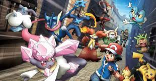
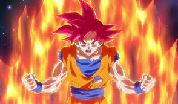
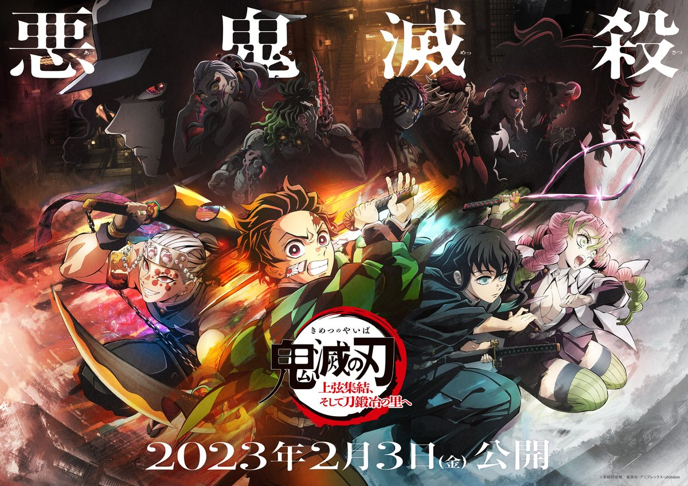
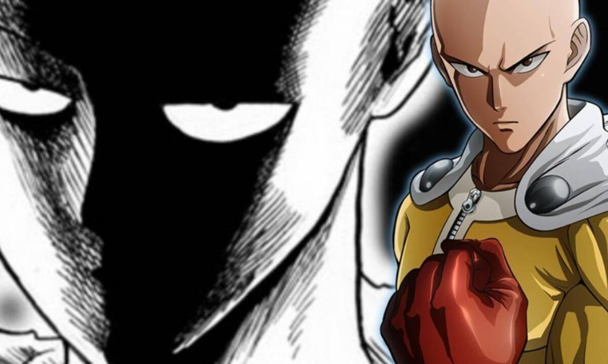
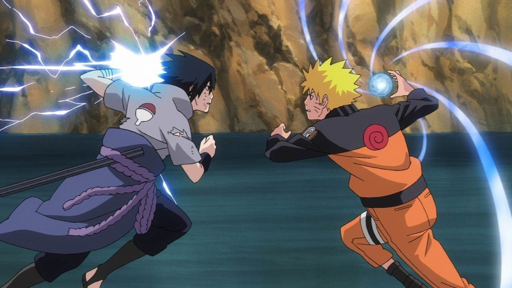

Pokémon
Pokémon (ポケモン Pokemon?)[1][2] é uma franquia de mídia que pertence a The Pokémon Company,[3] tendo sido criada por Satoshi Tajiri em 1995.[4] Ela é centrada em criaturas ficcionais chamadas "Pokémon", que os seres humanos capturam e os treinam para lutarem entre si com seus ataques de diversos tipos.A franquia começou com um par de jogos lançados para o Game Boy original, desenvolvidos pela Game Freak e publicados pela Nintendo. Atualmente, a franquia se estende em jogos, cartas colecionáveis, série de televisão, além de filmes, mangás e brinquedos. Pokémon é a segunda franquia de mídia de jogos mais bem sucedida e lucrativa do mundo, atrás da franquia de Mario que também pertence a Nintendo.[5
Dragon Ball
Dragon Ball Z (???????Z Doragon Boru Zetto?) (geralmente abreviado como DBZ) foi uma série de animação produzida pela Toei Animation. Baseada na série de mangá Dragon Ball escrita por Akira Toriyama, Dragon Ball Z corresponde aos volumes 17 ao 42 do mangá que foi publicado na revista, Weekly Shonen Jump, de 1988 a 1995, e estreou no Japão na Fuji TV em 26 de abril de 1989, e terminou dia 31 de janeiro de 1996 com o total de 291 episódios,[3] antes de ser dublada em diversos territórios ao redor do globo, incluindo Estados Unidos, Austrália, Europa, Índia e América Latina. A série já foi exibida em mais de 80 países ao redor do mundo.[4] O sucesso da série Dragon Ball levou à criação da continuação, Dragon Ball Z, sendo um dos animes mais conhecidos de todos os tempos. Esta série aparece recheada de longos combates com muita ação. Em Dragon Ball Z, as histórias possuem um clima mais sério que as de seu antecessor. Substituíram a comédia, mas o humor ainda existe em muitas partes da série. Possui vários episódios em que o suspense é entrelaçado aos acontecimentos que primeiramente não parecem ter grande relevância, ou de fatos despercebidos e revelados com maiores detalhes no auge de tal acontecimento. Foi lançado o primeiro BOX com 4 DVDs de Dragon Ball Z em agosto de 2012, sendo a primeira vez que o anime é distribuído oficialmente em home vídeo no Brasil pelo Grupo PlayArte. Atualmente está no 3° box com 52 episódios já lançados. A popularidade da Dragon Ball Z gerou numerosos lançamentos que representaram a maioria dos conteúdos no universo da Dragon Ball; incluindo 17 filmes e 148 jogos de vídeo, muitos deles sendo lançados apenas no Japão, e uma série de trilhas sonoras provenientes desse material. Dragon Ball Z continua a ser um ícone cultural através de inúmeras adaptações, incluindo uma transmissão remasterizada mais recente, intitulada Dragon Ball Kai. Dragon Ball Z foi sucedido por Dragon Ball GT (1996–1997) e Dragon Ball Super (2015–2018).
Demon Slayer
Kimetsu no Yaiba (鬼滅きめつの刃やいば , Ki metsuKimetsu no YaibaYaiba?, lit. Lâmina (刃)Lâmina de Destruição (滅)Destruição de Onis (鬼)Onis), também conhecido pelo título em língua inglesa Demon Slayer (Matador de Demônios, em português) é uma série japonesa de mangá shōnen escrita e ilustrada por Koyoharu Gotōge. O mangá é serializado desde 15 de fevereiro de 2016 e foi encerrado em 18 de maio de 2020 na revista semanal Weekly Shōnen Jump, com seus capítulos sendo reunidos em 23 volumes tankōbon pela editora Shueisha. Uma adaptação de um mangá para um anime de 26 episódios, produzida pelo estúdio ufotable, teve sua 1ª temporada exibida entre 6 de abril e 28 de setembro de 2019,[1] e 2ª temporada, entre 10 de outubro de 2021 e 13 de fevereiro de 2022. [2]
One Punch Man
One Punch-Man (ワンパンマン Wanpanman, lit. "Homem Um-Soco"?) é uma série de webcomic criada pelo autor com o pseudónimo One,[5] e é publicada desde 2009. A série rapidamente tornou-se um fenómeno viral, alcançando mais de 7,9 milhões de acessos, em junho de 2012. O nome da obra Wanpanman é uma paródia da personagem Anpanman, a palavra wanpan é uma contração de wanpanchi (one punch em língua inglesa).[6] One Punch-Man conta a história de Saitama, um super-herói extremamente poderoso, que se entediou com a ausência dos desafios nas suas lutas contra o mal e procura encontrar um oponente digno.
Naruto
Naruto (ナルト?) é uma série de mangá escrita e ilustrada por Masashi Kishimoto, que conta a história de Naruto Uzumaki, um jovem ninja que constantemente procura por reconhecimento e sonha em se tornar Hokage, o ninja líder de sua vila. A história é dividida em duas partes, a primeira parte se passa nos anos da pré-adolescência de Naruto, e a segunda parte se passa em sua adolescência. A série é baseada em dois mangás one-shots de Kishimoto: Karakuri (1995), e que por causa dele Kishimoto ganhou uma menção honrosa no prêmio Hop Step da Shueisha no ano seguinte, e Naruto (1997). A editora Panini Comics licenciou e publicou o mangá em três versões no Brasil, e em Portugal é a editora Devir Manga quem licencia e publica o mangá. A história de Naruto continua com o seu filho, Boruto Uzumaki em Boruto: Naruto Next Generations.